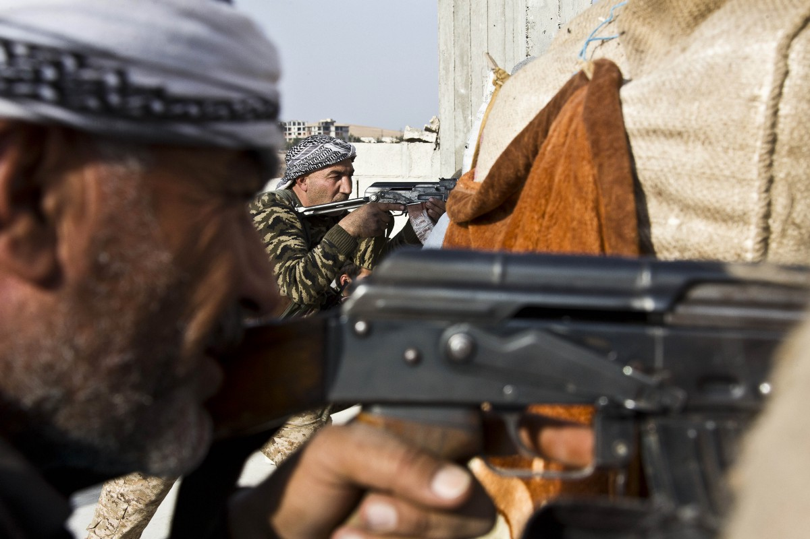
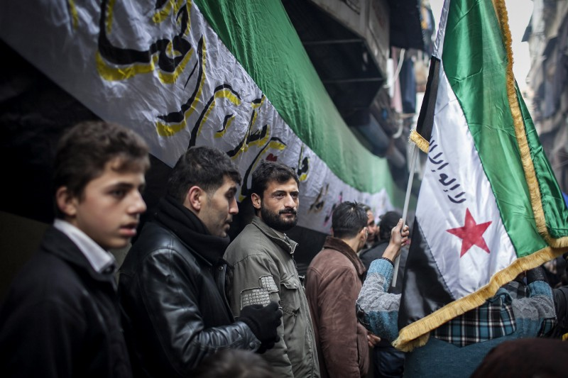
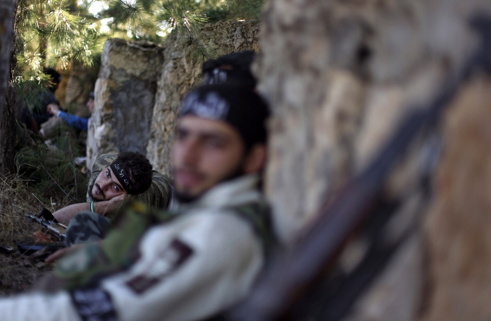

Éxodo: Siria y la guerra del miedo
Según cifras de Médicos sin Fronteras (MSF), tan solo en enero de 2016, han muerto 300 personas en el mar Egeo. La enorme mayoría de estos muertos son Sirios; todos ellos eran migrantes. Desde que, hace cinco años, comenzara la guerra civil en Siria, 300 mil personas han fallecido en el conflicto. Además, el enorme costo humano de esta guerra se ha desdoblado en la crisis humanitaria más aguda que el mundo ha presenciado desde la Segunda Guerra Mundial. La cantidad de desplazados, migrantes y refugiados que ha causado este conflicto sobrepasa, en cifras, el éxodo que causara la guerra genocida de Ruanda. Y nada parece detener el flujo interminable de exiliados.
Un equipo internacional de reporteros liderado por Carlos Loret de Mola documentó las dolorosas experiencias que muchos migrantes de Siria, Irak y otros países de Medio Oriente han padecido desde que inició uno de los más cruentos conflictos de nuestro naciente siglo. El resultado es Éxodo, un viaje que busca mostrar, de manera íntima, la realidad de un desplazamiento masivo, cuyas víctimas tienen nombre y rostro. Actualmente, más de 10.5 millones de sirios han tenido que dejar sus hogares. Casi la mitad de ellos se han visto forzados a convertirse en refugiados que buscan un escape de la muerte en las promesas de un continente rico y desigual como Europa y en países aledaños al desgarrado territorio que los vio nacer. Este movimiento masivo de personas ha puesto sobre la mesa preguntas tan incómodas como urgentes sobre la capacidad de solidaridad humana, la insuficiencia de la ayuda internacional y el papel de las naciones desarrolladas frente a las tragedias que dividen a los países menos privilegiados.
 Soldado del Ejército Libre Sirio (izquierda) y de las fuerzas kurdas, Unidades de Protección Popular (centro), se unen en un enfrentamiento contra el Estado Islámico en noviembre del 2014. (AP Photo/Jake Simkin)La guerra en Siria se ha extendido mucho más allá de los confines del territorio en conflicto. Muchas de las críticas a la política exterior de la administración de Obama se dirigen a su pobre manejo del conflicto en Siria. Ahora mismo, las tensiones entre Rusia, muchas naciones europeas, Israel y los Estados Unidos se centran en los matices de este conflicto. Mientras algunas potencias apoyan a un grupo armado dentro de una guerra casi tribal, muchas otras siguen mostrando su apoyo al régimen de Bashar Al-Assad; mientras algunas potencias se han decidido por una intervención moderada, muchas otras siguen considerando un papel militar mucho más activo. Y en medio de todo este desastre internacional, ha surgido el Estado Islámico (EI). En muy poco tiempo, este grupo radical ha logrado controlar la mitad del territorio Sirio y un tercio de Irak. Este grupo, que declaró su califato en 2014, se ha adjudicado muchos de los ataques terroristas que han tenido a Europa al vilo, que han sembrado pánico en Irak y que han dejado centenas de muertos en Pakistán. Todos estos son conflictos a los que, en principio, la comunidad internacional prestó oídos más bien sordos: al inicio del conflicto en Siria, no se anunciaba este nivel de implicaturas de gobiernos, estos horrores o la enormidad de los potenciales costos humanos.
Una guerra inesperada
En 2011, miles de ciudadanos salieron a la calle para oponerse al régimen dictatorial que la familia Al-Assad había mantenido en Siria desde hacía más de cuarenta años. Se trataba de una protesta pacífica que continuaba la veta de esperanza de las primaveras árabes. Todo parecía posible en ese momento: las redes sociales servían un papel revolucionario, los ciudadanos salían numerosos a las calles y los regímenes de otros países comenzaban a flaquear. Hubo transición en Túnez, Egipto y Yemen mientras que, en Libia, las revueltas terminaron en un violento conflicto que derivó en la muerte de Muamar Gadafi tras 42 años en el poder.
En Siria, como en Libia, las cosas se salieron rápidamente de control. Muy pronto los manifestantes comenzaron a ser agredidos por la fuerza del orden con piedras y gases lacrimógenos. Cuando la población respondió con la misma moneda, el gobierno ordenó que se abriera fuego contra los opositores. Esto desató una guerra civil que dividió al país en cuatro ejércitos: el Ejército Libre Sirio, de tendencia moderada; el EI, grupo terrorista de islamismo radical que controla, actualmente, la mayor parte del territorio y de los recursos naturales; las milicias kurdas del Partido de la Unión Democrática (PYD) y de las Unidades de Protección Popular (YPG) en el norte de Siria e Irak; y el ejército leal a Al-Assad que se extiende, principalmente, en la franja occidental del país. Bajo el constante peso de los bombardeos de fuerzas extranjeras, las principales ciudades de Siria quedaron en ruinas. Y pronto, el gobierno de Al-Assad comenzó a exceder toda mesura internacional con los ataques que desató sobre su aterrorizada población.
 Protestas en Aleppo, Siria en Enero del año 2013. (AP Photo/ Andoni Lubaki)El 21 de agosto del 2013, las fuerzas de Bachar Al-Assad soltaron armas químicas sobre asentamientos rebeldes en Guta, en los alrededores de Damasco. Ésta zona era un enclave esencial de las fuerzas rebeldes que se estaba convirtiendo en una verdadera pesadilla estratégica para el gobierno sirio. El uso de armas químicas resultó ser, según las investigaciones de distintos países opositores al régimen, una medida desesperada para frenar el avance de las tropas rebeldes. En todo caso, y a pesar de las discrepancias en las investigaciones, el ataque resultó en la muerte de alrededor de mil 500 personas (entre ellos numerosos niños y civiles). Diversos videos e investigaciones mostraron síntomas consecuentes al uso de gas Sarín, un poderoso agente nervioso que ataca la respiración y que en dosis letales, puede causar la muerte en menos de diez minutos de agonía. Ésta masacre que despertó la indignación internacional no fue la primera ni la última perpetrada por las fuerzas de Al-Assad.
 Soldados rebeldes sirios descansan. (AP Photo/ Khalil Hamra, File)El miedo de los desplazados frente a los constantes bombardeos creció con este uso indiscriminado de armas químicas y la enorme cantidad de bombas de barril que las fuerzas lealistas tiraban sobre ciudades rebeldes. Estas bombas, de fabricación artesanal y de bajísimo costo, son utilizadas por el ejército de Al-Assad como una forma de emplear su superioridad aérea en las zonas urbanas que no pueden contrarrestar ataques de aviones y helicópteros. Se trata de barriles con capacidades superiores a 500 kilos que se llenan de explosivos baratos y se recubren de pedazos de metralla. Al impactar el suelo de manera completamente aleatoria, estas bombas llegan a causar más daños que muchos misiles teledirigidos. La diferencia aquí es que los daños no se controlan, sino que se maximizan. Entre 2013 y 2014 se registraron, tan solo en Alepo, cientos de ataques con bombas de barril que causaron cuantiosas bajas civiles en los barrios más populares de la ciudad. Entre junio y agosto de 2015, una bomba caía cada dos días en un hospital: el gobierno Sirio es responsable del 90% de los ataques a centros de salud y del 95% de los ataques a personal médico. Desde 2011, se han registrado más de 4 mil ataques en contra de escuelas. Así, uno de los principales productos de esta guerra que permitió las más grandes atrocidades fue, más allá de las enormes masacres, el miedo que sembró en la población sobreviviente.
La tragedia humanitaria
Durante esta guerra cada vez más cruenta, las migraciones masivas alcanzaron puntos críticos paralizando la economía de Jordania y causando el cierre de las fronteras terrestres de Líbano, Grecia, Macedonia, Bulgaria, Hungría y Albania. Los desplazados buscaban alcanzar las naciones más prósperas de Europa Occidental (principalmente Alemania y Suecia) para poder empezar de cero. Se trata de personas que perdieron todo, que dejaron sus pertenencias, sus familias y amigos, que abandonaron un patrimonio desgarrado, que no comparten el idioma de los países que los reciben y que no tienen una situación legal estable. Son las víctimas más numerosas de la guerra, perdidos en un limbo humillante en el que deben pedir refugio a quien no los quiere, recorriendo naciones en crisis que no tienen la infraestructura para recibirlos, luchando contra las disposiciones burocráticas y la inestabilidad absoluta en cuestiones de salud y seguridad. Es la historia de estas víctimas, de estos sobrevivientes condenados al exilio, la que se cuenta en Éxodo.
Éxodo no sólo es un retrato de horror: también pone sobre la mesa de discusión los posibles futuros de Siria. Es por eso que se enfoca en la mirada de los niños migrantes, en la esclavitud a la que son sometidos en Turquía, en la fragilidad de sus constituciones, en la soledad de estas pequeñas víctimas que deben abandonar a sus familias para que padres, madres y abuelos puedan mantener viva la esperanza de un futuro. Las cifras son escalofriantes: 7.5 millones de niños sirios no conocen otra cosa más que la guerra; 6 millones necesitan ayuda humanitaria básica para asegurar su supervivencia; 2.1 millones de niños viven como refugiados; y, desde 2011, más de 5 niños dejan su hogar cada día. En este panorama desolador, aquellos que se niegan a matar o a morir ejercen una decisión propia en una situación fatal. Pero los niños no deciden nada. Huyendo, éstas son las víctimas más inocentes, más frágiles y más simbólicamente significativas: sin niños, un país no tiene futuro.
Este documental es un acercamiento íntimo al sufrimiento de los niños migrantes. Pasa por las historias de infantes congelados en el mar Egeo, muestra las tumbas en Lesbos adornadas, por un enterrador muy humano, con osos de peluche. Retrata el dolor de todos los migrantes, sirios e irakis y las travesías indescriptibles que tienen que emprender y los peligros que los acechan en cada esquina. En el viaje de miles de kilómetros que atraviesan Turquía y Europa a través de mar y tierra, la historia de los migrantes que se narra en Éxodo es una historia de la geopolítica contemporánea; una historia trágica de desbalances económicos, persecución y miseria. Ésta es también la historia de nuestro siglo y de sus horrores, una historia trágica de desigualdad y abandono humano.
En las imágenes de ciudades destruidas; en las montañas de chalecos salvavidas que se elevan como monumento a la voluntad de vivir en la isla de Lesbos; en las terribles fronteras de los países más pobres de Europa, habita el fantasma del miedo. El miedo a las represalias brutales del EI, el miedo a las bombas de barril y a la visión obsesiva de cadáveres en las calles, el miedo a un futuro inhóspito para hombres, mujeres y niños que escaparon de un sartén para caer en muchos otros, tormentosos, fuegos.
El nombre bíblico del documental nos dice mucho: ésta es la historia más antigua, la historia de poblaciones que se han enfrentado, desde culturas milenarias, a las peripecias más peligrosas para encontrar lo que, en sus hogares, se perdió para siempre: la posibilidad de pensar en un futuro, cualquiera, que no se opaque por el miedo.